(Lærebok 13.2)
Magnetfeltet i figuren er uniformt, \( \vec{B} = B_z \z \), for \( y > 0 \) og \( \vec{B} = 0 \) for \( y < 0 \).
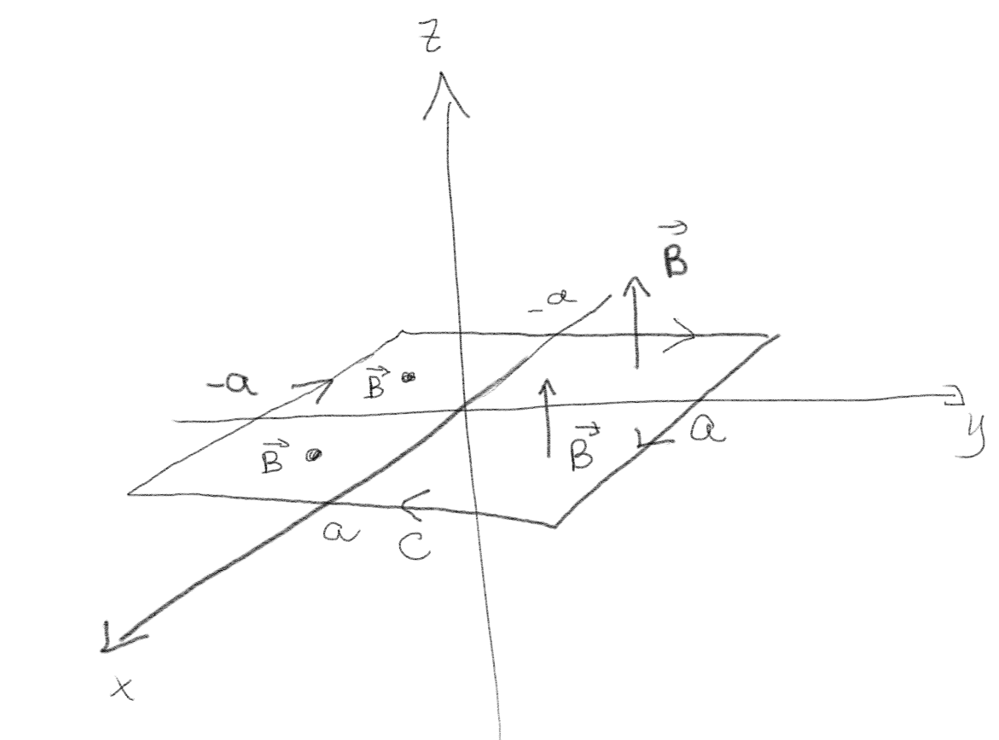
a) Hva er størrelsen og fortegnet til fluksen av det magnetiske feltet gjennom \( 2a \times 2a \) kretsen i \( xy \)-planet som er vist i figuren?
\( -2B_z a^2 \).
Fluksen er gitt som $$ \begin{equation} \Phi_B = \int_S \vec{B} \cdot \d \vec{S} \; . \tag{7} \end{equation} $$ Retningen på overflatenormalen \( \nhat \) er gitt av retningen på strømmen i kretsen. Vi bruker høyrehånds-regelen, krummer de fire fingrene untatt tommelen i retning av strømmen og ser at tommelen da peker i retning av overflatenormalet som er nedover, dvs. i negativ \( z \)-retning. Altså er \( \nhat = -\z \).
Vi ser at det magnetiske feltet er homogent i området \( y > 0 \) og i \( y < 0 \). Vi kan derfor dele opp overflate-integralet i to deler, ett for \( S_1 \) som er for \( y < 0 \) og ett for \( S_2 \) som er for \( y > 0 \). $$ \begin{equation} \int_S \vec{B} \cdot \d \vec{S} = \int_{S_1} \vec{B} \cdot \d \vec{S} + \int_{S_2} \vec{B} \cdot \d \vec{S} \tag{8} \end{equation} $$ Vi ser at for \( S_1 \) så er \( \vec{B} = 0 \) slik at \( \int_{S_1} \vec{B} \cdot \d \vec{S} = 0 \). For \( S_2 \) så er \( \vec{B} = B_z \z \) slik at \( \int_{S_2} \vec{B} \cdot \d \vec{S} = -B_z S_2 = -B_z 2a \, a = -2 B_z a^2 \).
Magnetfeltet i figuren er uniformt inn i planet.
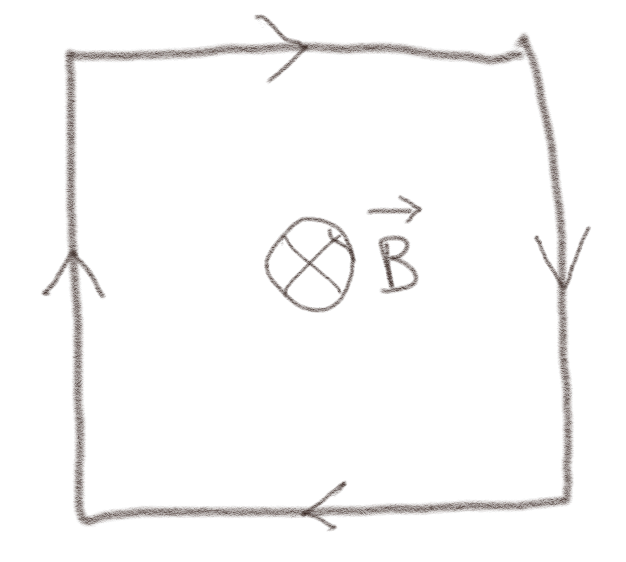
a) Hva er fortegnet til \( \Phi_B \)?
Positivt.
Overflatenormalen er gitt av positiv retning på kretsen. Vi bruker høyrehåndsregelen og krummer de fire fingrene på høyre hånd unntatt tommelen i positiv retnign langs kretsen og ser at tommelen da peker i retning av positiv overflatenormal, som er inn i planet. Dette er samme retning som magnetfeltet, slik at fluksen vil være positiv.
b) Hvordan endres størrelsen (\( |\Phi_B| \)) til den magnetiske fluksen gjennom kretsen seg hvis vi halverer størrelsen på \( \vec{B} \)-feltet og dobler lengden på sidekanten i den kvadratiske strømkretsen?
Fluksen blir doblet.
Fluksen er gitt som $$ \begin{equation} \Phi_B = \int_S \vec{B} \cdot \d \vec{S} \; , \tag{9} \end{equation} $$ hvor overflatenormalen peker i samme retning som magnetfeltet. Siden magnetfeltet er uniformt kan vi sette dette utenfor integralet: $$ \begin{equation} \Phi_B = \int_S \vec{B} \cdot \d \vec{S} = B\int_S \d S = B S \tag{10} \end{equation} $$ Hvis vi dobler sidekanten vil \( S \) blir fire ganger større, mens vi kun halverer \( B \). Netto effekt blir derfor $$ \begin{equation} \Phi_B' = (B/2)(4S) = 2BS \tag{11} \end{equation} $$ Fluksen blir derfor doblet.
(Lærebok 13.2.1)
a) En ledningssløyfe beveger seg raskt gjennom et uniformt magnetfelt som vist i figuren. Blir det indusert en emf i sløyfen?
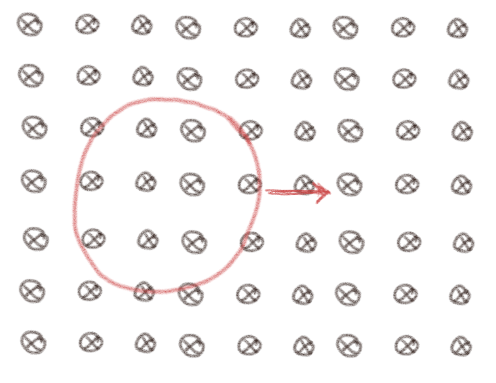
Nei
Siden magnetfeltet er uniformt vil ikke fluksen gjennom sløyfen endre seg. Det er derfor ingen endringen i fluksen og derfor ingen indusert emf.
b) Hva hvis sløyfen er elliptisk og i stedet roteres om en akse som er normalt på planet til skjermen/papiret? Blir det indusert en emf i sløyfen?
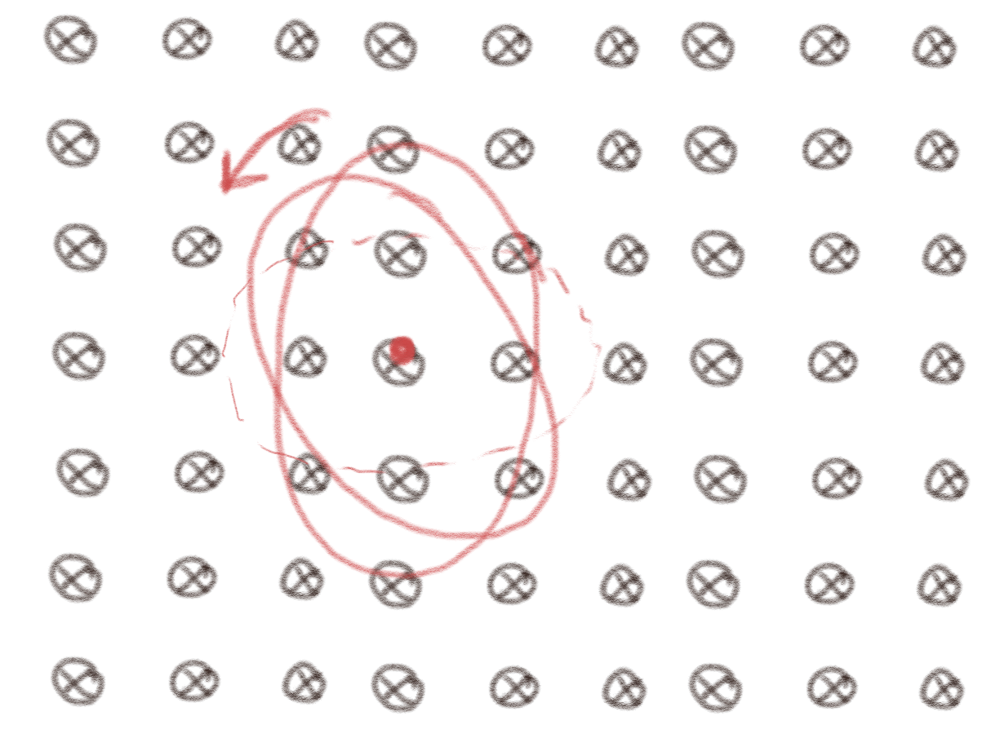
Nei
Også i dette tilfellet vil ikke fluksen endres: Magnetfeltet er uniformt og størrelsen på sløyfen endres ikke, slik at fluksen er den samme. Dermed er den tidsderiverte av fluksen null. Det blir derfor ikke indusert noen emf.
(Lærebok 13.2.2)
Magnetfeltet i figuren er uniformt. Hva er retningen på strømmen hvis?
a)
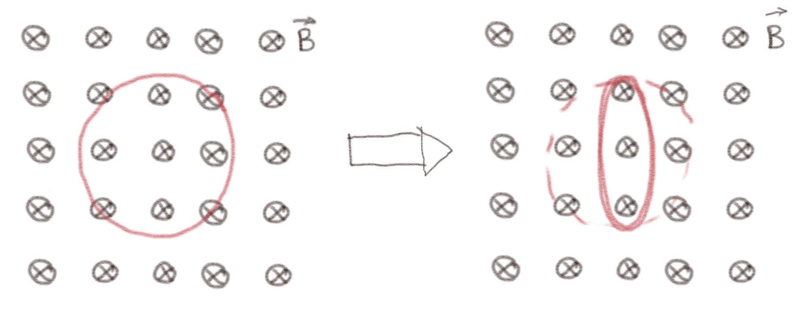
Størrelsen på kretsen minker?
Definer en positiv retning for strømmen og bruk denne i dine argumenter/utregninger.
Bruk Faradays lov til å finne indusert emf.
Med klokken.
Her er ikke positiv retning på strømmen oppgitt. Vi velger positiv regning med klokken, slik at overflatenormalen peker inn i skjermen/arket. Fluksen gjennom kretsen er da $$ \begin{equation} \Phi_B = \int_S \vec{B} \cdot \d \vec{S} = B_z S \; , \tag{12} \end{equation} $$ Vi ser at når overflaten \( S \) minker vil \( \Phi_B \) minke. Faradays lov gir at den indusert emf'en da vil være $$ \begin{equation} e = - \frac{\d \Phi_B}{\d t}\; \tag{13} \end{equation} $$ Vi ser derfor \( \d \Phi_B/\d t < 0 \) og at \( e > 0 \). Vi antar at sløyfen har en endelig motstand \( R \). Da vil strømmen som induseres være gitt av Kirchoffs spenningslov, \( e - RI = 0 \), og derfor \( I = e/R \). Siden \( e > 0 \) vil derfor også \( I > 0 \). Strømmen vil gå i det som vi har definert som positiv retning, som er med klokken.
b)
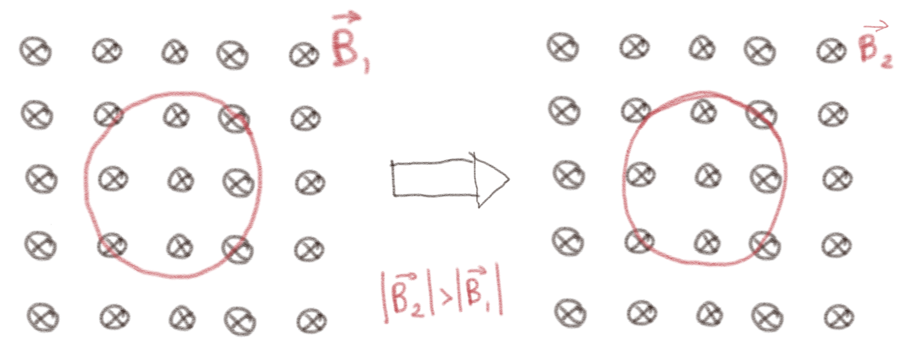
Størrelsen på magnetfeltet øker?
Mot klokken.
Her er ikke positiv retning på strømmen oppgitt. Vi velger positiv regning med klokken, slik at overflatenormalen peker inn i skjermen/arket. Fluksen gjennom kretsen er da $$ \begin{equation} \Phi_B = \int_S \vec{B} \cdot \d \vec{S} = B_z S \; , \tag{14} \end{equation} $$ Vi ser at når størrelsen på magnetfeltet øker vil \( \Phi_B \) minke. Faradays lov gir at den indusert emf'en da vil være $$ \begin{equation} e = - \frac{\d \Phi_B}{\d t}\; \tag{15} \end{equation} $$ Vi ser derfor \( \d \Phi_B/\d t > 0 \) og at \( e < 0 \). Vi antar at sløyfen har en endelig motstand \( R \). Da vil strømmen som induseres være gitt av Kirchoffs spenningslov, \( e - RI = 0 \), og derfor \( I = e/R \). Siden \( e < 0 \) vil derfor også \( I < 0 \). Strømmen vil gå i det som vi har definert som negativ retning, som er mot klokken.
En permanentmagnet holdes under en horisontal strømsløyfe som vist i figuren. Magneten trekkes så nedover, vekk fra sløyfen.
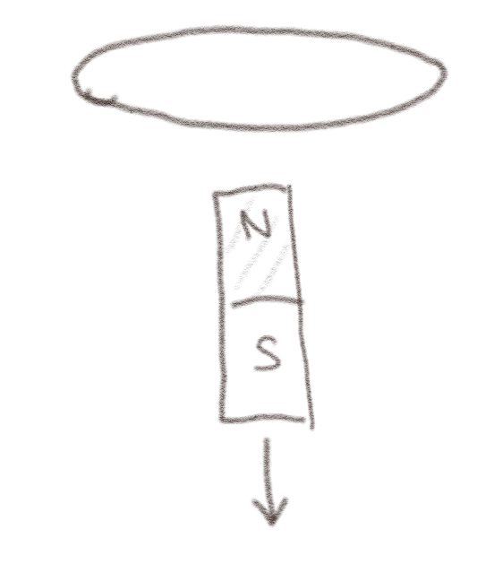
a) Din medstudent, Kim, sier at siden det er en permanentmagnet så vil det ikke være noen endring i fluksen, og derfor kan det ikke induseres noen strøm i sløyfen. Har hen rett?
Hva skjerm med magnetfeltet som går gjennom strømsløyfen?
Nei
Hva skjer i dette tilfellet? Magnetfeltet rundt magneten endrer seg ikke med tiden, men posisjonen til magneten endrer seg, slik at magnetfeltet som går gjennom strømsløyfen vil endre seg. Det blir derfor indusert en emf i sløyfen.
b) Hvilken retning får den induserte strømmen når kretsen sees ovenfra? (Med eller mot klokken, eller er den null?)
Mot klokken.
La oss velge positiv retning slik at overflatenormalen peker oppover, dvs. mot klokken sett ovenfra. Magnetfeltet fra magneten vil peke oppover, slik at det vil være en positiv fluks gjennom sløyfen. Når magneten flyttes nedover, vil magnetfeltet gjennom sløyfen bli mindre, slik at fluksen vil avta. Da vil den induserte emf'en, som er \( e = - \d \Phi/\d t \) være positiv. Det vil derfor induseres en strøm i positiv retning som er mot klokken sett ovenfra.
(Lærebok 13.2.3)
(Lærebok 13.2.4)
a) En ende av en rektangular kobberkrets beveger seg inn i et område med konstant og uniformt magnetisk felt \( \vec{B} \) med en hastighet \( \vec{v} \) som vist i figuren. Magnetfeltet er null utenfor det skraverte området.
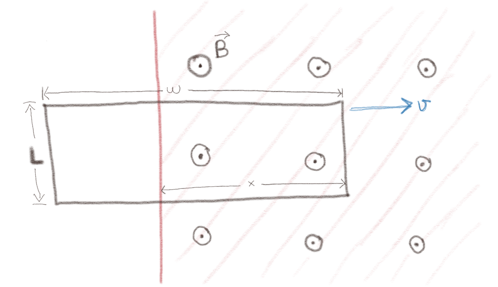
I hvilken retning vil strømmen gå?
Med klokken.
Vi velger positiv overflatenormal i samme retning som magnetfeltet, ut av planet, som svarer til positiv strømretning mot klokken. Når kretsen beveger seg inn i magnetfeltet vil derfor arealet av kretsen som er inne i magnetfeltet øke og fluksen gjennom kretsen vil øke slik at \( \d\Phi/\d t > 0 \). Det betyr at den induserte emf'en, som er \( e = - \d \Phi/\d t < 0 \). Den induserte strømmen vil derfor gå i negativ retning. Det betyr at strømmen vil gå med klokken. (Merk at i det hele kretsen er inne i området med magnetfelt vil det ikke lenger være noen endring i fluksen, og dermed vil det ikke bli indusert noen strøm).
b) En ende av en rektangular kobberkrets beveger seg inn i et område med konstant og uniformt magnetisk felt \( \vec{B} \) med en hastighet \( \vec{v} \) som vist i figuren. Magnetfeltet er null utenfor det skraverte området.
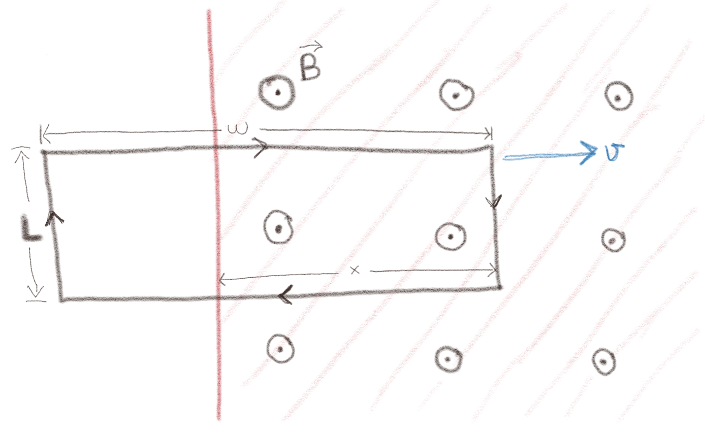
Hva er fluksen gjennom løkken?
\( -xLB \)
Vi ser at overflatenormalen til kretsen med den valgte strømretningen er inn i planet, mens magnetfeltet peker i motsatt retning ut av planet, slik at \( \vec{B} \cdot \d \vec{S} = - B\d S \). Fluksen er gitt som $$ \begin{equation} \Phi = \int_S \vec{B} \cdot \d \vec{S} = -\int_S B \d S \; . \tag{16} \end{equation} $$ Vi deler arealet i to deler, \( S_1 \) er arealet som er innenfor magnetfeltet. Dette har størrelsen \( S_1 = xL \), mens \( S_2 \) er det gjenstående arealet \( S_2 = (w-x)L \). Magnetfeltet er null i \( S_2 \). Fluksen er derfor $$ \begin{equation} \Phi = -\left( \int_{S_1} B \d S + \int_{S_2} B \d S \right)= -S_1 B_1 - S_2 B_2 = -xL B_1 - (w-x)L 0 = -xL B \; . \tag{17} \end{equation} $$
c) En ende av en stasjonær rektangular kobberkrets er i et område med uniformt magnetisk felt \( \vec{B} = (B_0+kt)\z \). Magnetfeltet er null utenfor det skraverte området.
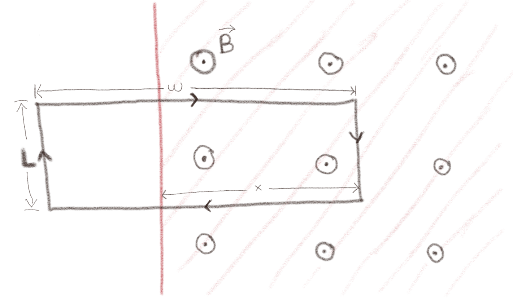
Hva er emf'en rund strømsløyfen?
\( e = kxL \)
Overflatenormalen til kretsen er inn i planet, mens magnetfeltet er ut av planet, slik at \( \vec{B} \cdot \d \vec{S} = - B\d S \). Fluksen gjennom kretsen er da: $$ \begin{equation} \Phi = \int_S \vec{B} \cdot \d \vec{S} = -\int_S B \d S = \int_{S_1} B \d S - \int_{S_2} B \d S = -B_1 S_1 - B_2 S_2\; . \tag{18} \end{equation} $$ hvor \( B_1 = B_0 + kt \) og \( B_2 = 0 \) slik at $$ \begin{equation} \Phi = -(B_0 + kt) xL \; . \tag{19} \end{equation} $$ Faradays lov gir da at den induserte emf'en er \( e = - \d \Phi / \d t \): $$ \begin{equation} e = - \frac{\d\Phi}{\d t} = k x L \; . \tag{20} \end{equation} $$
d) Vi ser på det samme systemet som i forrige oppgave (oppgave c). Hvilken retning har det magnetiske feltet som settes opp av den induserte strømmen i løkken --- i det plane området innenfor løkken?
Inn i planet.
Vi kan her f.eks. bruke Biot-Savarts lov på strømmen vi fant i forrige oppgave. Da ser vi at siden emf'en er positiv er strømmen positiv. Ved høyrehåndsregelen ser vi at magnetfeltet vil peke inn i planet. Alternativt kan vi argumentere ved hjelp av Lenz lov: Magnetfeltet som settes opp vil redusere endringen som induserte strømmen. Siden magnetfeltet som induserer strømmen øker ut av planet, betyr det at magnetfeltet som induseres vil virke i motsatt retning, inn i planet, slik at den induserte fluksen blir mindre.
(Vi ser ofte bort fra magnetfeltet fra strømmen som er indusert i en krets, men dette er ikke riktig. Det er den totale fluksen som inngår i Faradays lov --- fluksen fra både det ytre magnetfeltet og fra magnetfeltet som settes opp av den induserte strømmen. Men magnetfeltet som settes opp av den induserte strømmen er ofte lite og kan derfor ignoreres. Vi skal i neste kapittel ser mer på denn effekten som kalles selv-induksjon, eller ofte bare induksjon).
En rektangulær strømsløyfe roterer i et homogent ytre magnetfelt \( \vec{B} \). I øyeblikket som er illustrert i figuren er sløyfen orientert slik at den venste delen av sløyfen er over planet i illustrasjonen og den høyre siden er under planet. Sløyfen roterer slik at den venstre siden er på vei ut av planet.
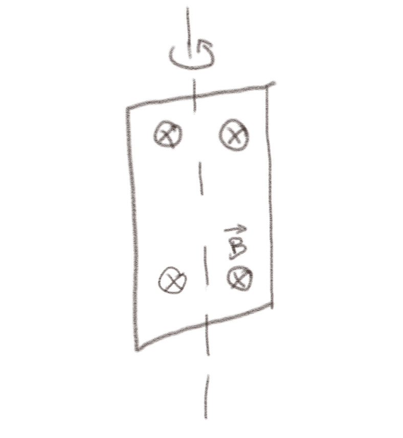
a) Hvilken vei vil strømmen i strømsløyfen gå?
Med klokken.
Vi velger positiv strømretning med klokken. Fluksen gjennom overflaten vil da være: $$ \begin{equation} \Phi = \int_S \vec{B} \cdot \d \vec{S} = \vec{B} \cdot \vec{S} \; , \tag{21} \end{equation} $$ som vil være positiv, men den vil være avtagende fordi arealet \( \vec{S} \) blir mer og mer normalt på \( \vec{B} \). Fluksen avtar derfor. Faradays lov gir oss da at $$ \begin{equation} e = - \frac{\d \Phi}{\d t} > 0 \; . \tag{22} \end{equation} $$ Den induserte emf'en er derfor positiv og strømmen er positiv. Strømmen vil derfor med klokken. (Merk at dette vil bli annerledes når sløyfen har rotert forbi posisjonen hvor sløyfen er normal på magnetfeltet. Se om du kan gjennomføre argumentet for denne situasjonen også.)
(Lærebok 13.2.5)